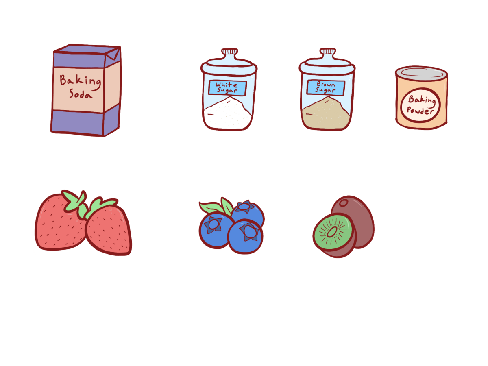

01
the AI recipe generator that knows what's in your fridge
Players collect ingredients into a virtual fridge, pick a difficulty (easy · medium · hard) and a time limit, and Mr. Paw reaches out to Google's Gemini API to cook up three tailored recipes they can actually make. The request goes through a Google Apps Script proxy so no API keys live in the game client.
built with · UnityWebRequest → Google Apps Script → Gemini API
